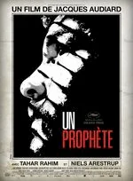
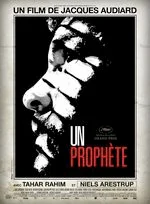
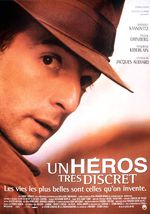
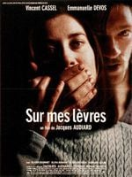
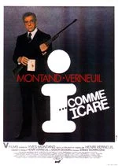
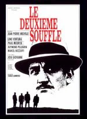
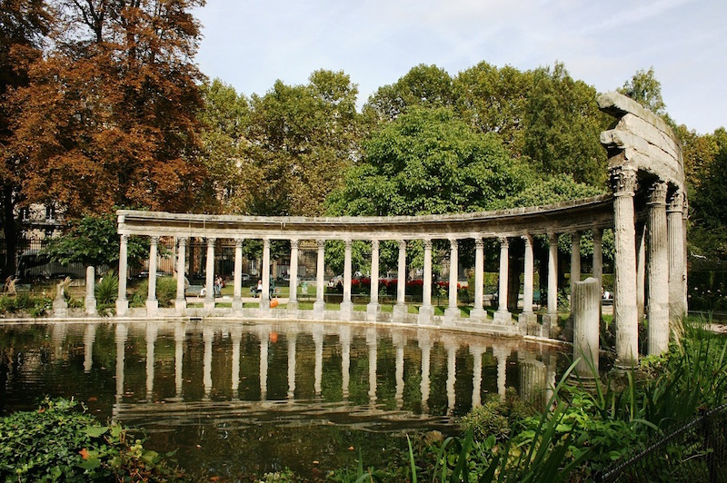

Un prophète (2009)
2 h 35 min
Sortie : 26 août 2009.
Drame, policier et gangster.
Film de Jacques Audiard avec Tahar Rahim, Niels Arestrup, Adel Bencherif
Plein air, Tout public, Cinéma
Cinéma en plein air 2021
Destinées • GRATUIT
du 5 août au 8 août 2021
Dans le parc Monceau





 L'association "Les Films de Plein Air" vous convie a a la projection
des meilleurs film d'auteur français chaque soir du 5 au 8 août, de 18 heures à minuit.
L'association "Les Films de Plein Air" vous convie a a la projection
des meilleurs film d'auteur français chaque soir du 5 au 8 août, de 18 heures à minuit.
La construction du parc Monceau remonte au XVIIe siècle, sous l’impulsion du duc de Chartres. Situé dans le 8e arrondissement, il est aujourd’hui l’un des plus élégants jardins de Paris, à l’image du quartier. Le visiteur pénètre par les grandes grilles en fer forgé rehaussées d’or. La promenade réserve de belles surprises : nombreuses statues, une arcade Renaissance de l’ancien Hôtel de Ville de Paris, arbres spectaculaires, grande diversité d’oiseaux et un grand bassin. Le parc Monceau est entouré d’immeubles de luxe et de somptueux hôtels particuliers, dont le musée Cernuschi (arts asiatiques). Un parc calme et agréable fréquenté par les parisiens et les touristes. Des aires de jeux pour les enfants sont disponibles.